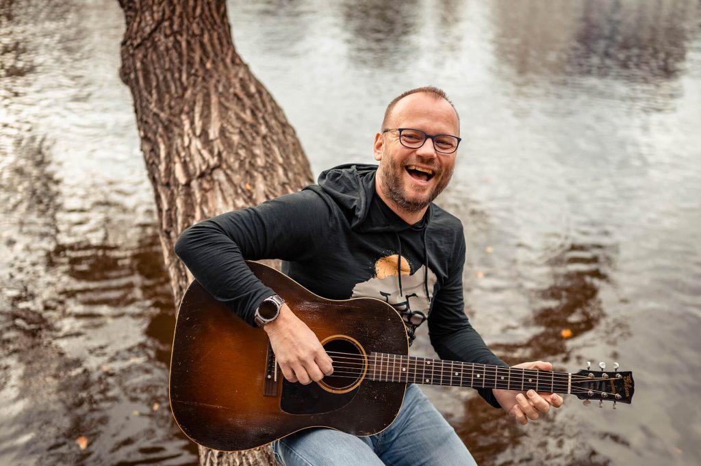
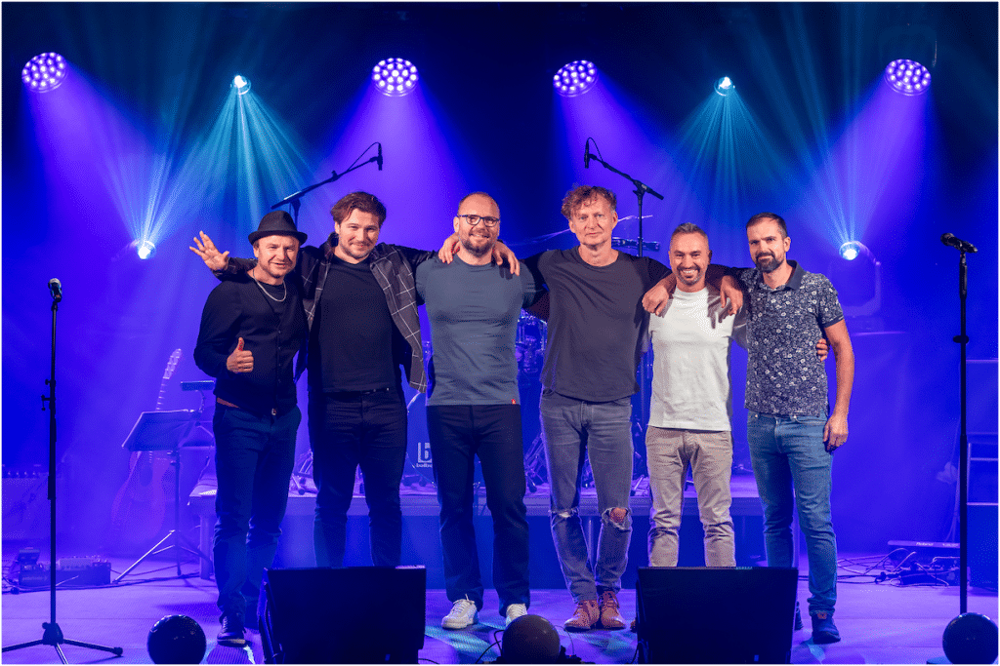
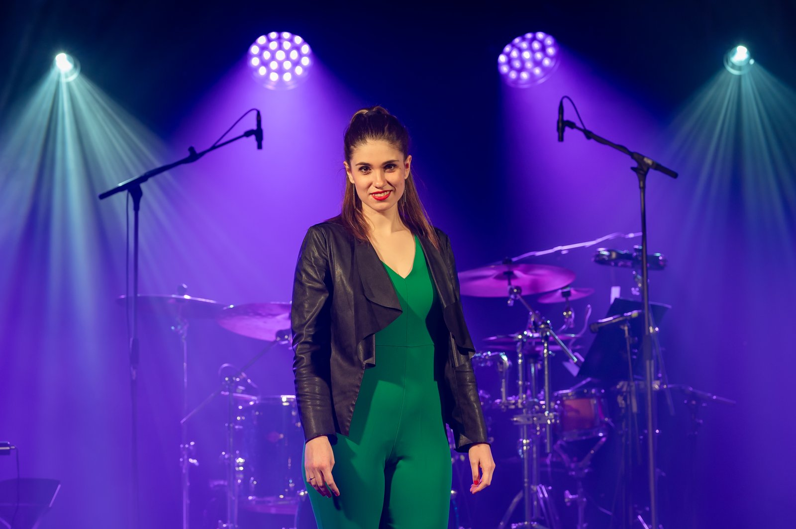
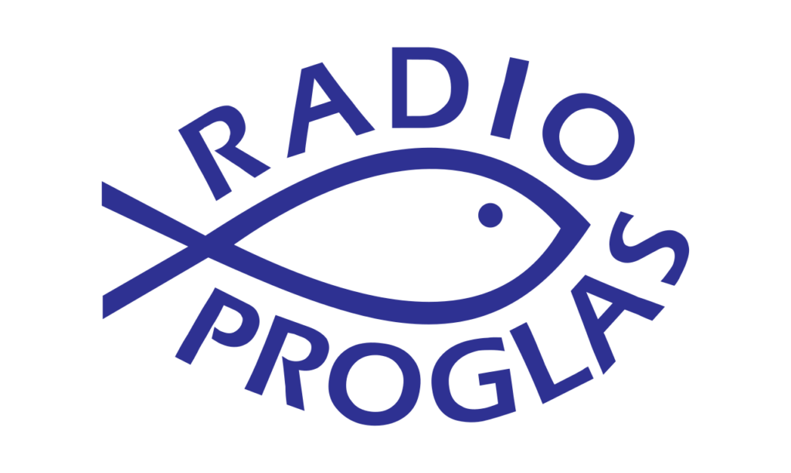
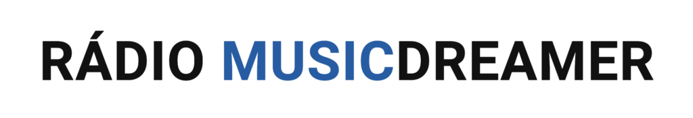

Zpívám písně o životě, lásce a svobodě – a hlavně pro radost. S partou skvělých muzikantů, kterým říkáme Kluci ze Šťastný planety. Přijďte si zazpívat s námi.
Dvě autorská alba, jeden rukopis: upřímné texty a melodie, které si budete broukat cestou domů.
Soubor písní na druhé desce je výsledkem skoro tříleté práce po vydání prvotiny. Deska jde zase o kousek dál a posouvá náš zvuk i zvuk samotných písní. Jsme prostě Kluci ze Šťastný planety, protože máme možnost dělat, co nás baví – a to s těmi nejlepšími.
Jedenáct písní, ve kterých si každý najde to své. „Jen s tebou věřím na zázrak" – chytlavý refrén písně Když nejsem s Tebou, zasněný Vlak z dětství i titulní Otevřená srdce, která podrží v bolestných chvílích samoty.
Hudbu dělám čistě pro radost – svoji i tu, kterou můžu předat dál.
Poprvé jsem vystoupil v roce 2017, kdy mě kamarád poprosil, jestli bych mu nezahrál pár písniček k nástupu na jeho svatbě. Od té doby hraju coververze na nejrůznějších akcích a baví mě to čím dál víc – nejsem profesionální hudebník, dělám to čistě pro zábavu, a o to víc jsem vděčný, že to může být s těmi nejlepšími.
Vlastní tvorba přišla v roce 2020, kdy mi Tomáš Strnad přinesl první písničky a já se sám pustil do psaní. První album bylo téměř celé jeho, na druhém jsem se osmělil víc a třetí desku, která právě vzniká, už píšu sám. O produkci se stará Dalibor Cidlinský jr., kytarová kouzla má na svědomí Josef Štěpánek.
„Letím a stoupám výš, nevnímám zemskou tíž, na chvíli pocit, že sníš, jenomže bez křídel neodletíš."
Pořád pracuji v IT firmě a rád létám – jsem držitelem licence komerčního pilota. K hudbě jsem se dostal jako puberťák, kdy jsem se snažil kytarou balit holky u táborových ohňů – nikdy se mi to nepovedlo, ale láska k hudbě zůstala.
Mým snem je jednou zahrát před víc než tisícovkou lidí. Ale ať se to splní nebo ne, všechno, co se kolem mojí hudby děje, je tak nějak navíc – a já jsem za to nesmírně vděčný.

Titulní píseň Otevřená srdce se v soutěži Česká dvanáctka (Český rozhlas Dvojka) držela na předních místech dlouhých 12 týdnů a 8× obsadila první místo. Ocenění Zlatá dvanáctka převzal František v paláci Žofín v rámci oslav narozenin Nočního proudu Českého rozhlasu.


Slyšet mě můžete také v rádiích


Festival, firemní večírek, oslava, svatba nebo komorní koncert? Rádi přijedeme – v plné sestavě s kapelou, nebo akusticky v menším složení.
Chcete nás pozvat na akci, domluvit spolupráci, nebo mi jen napsat, která písnička vám sedla? Budu rád.
info@frantisekzeman.cz